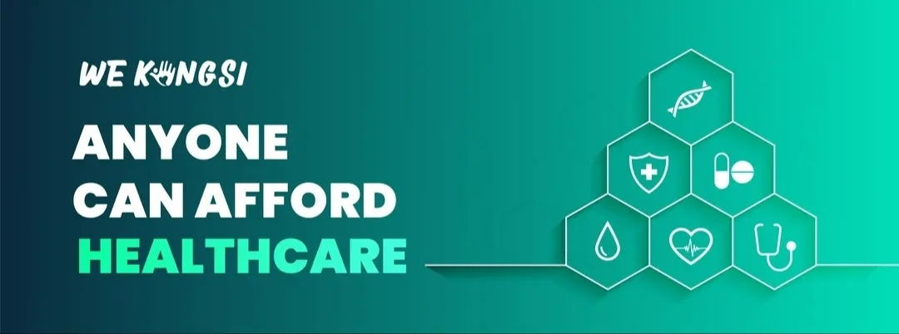
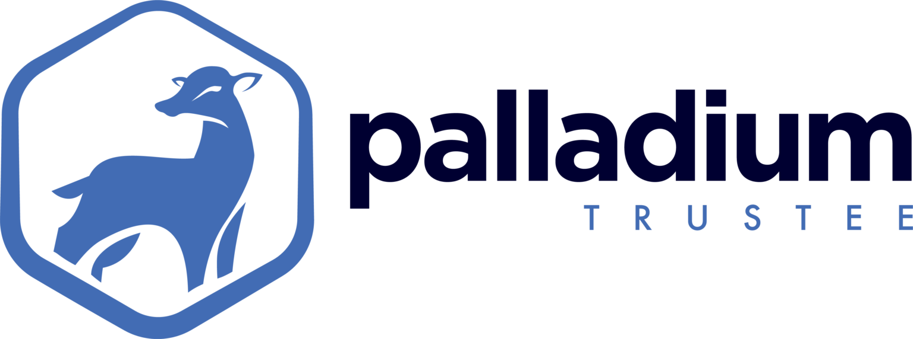
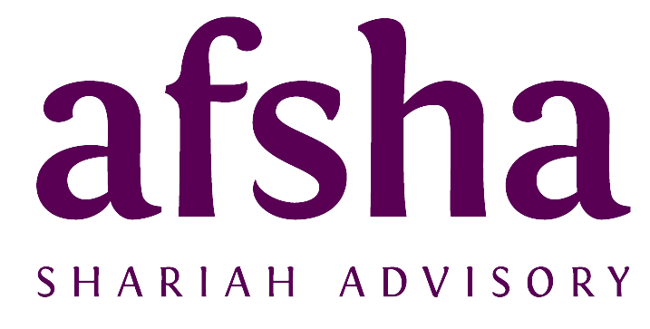
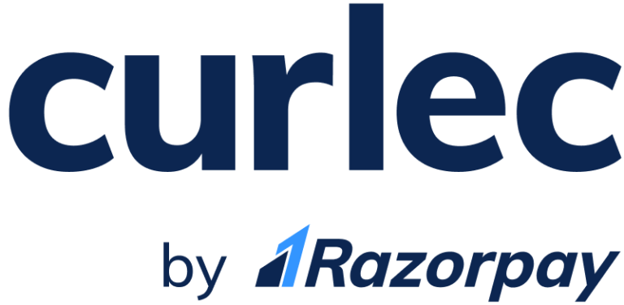
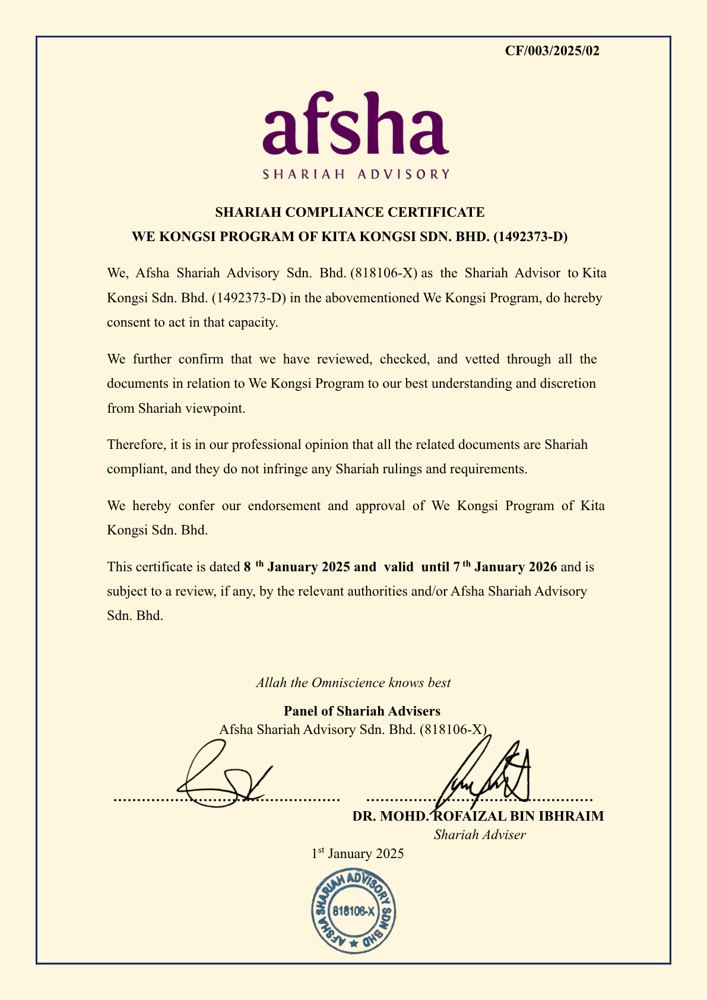
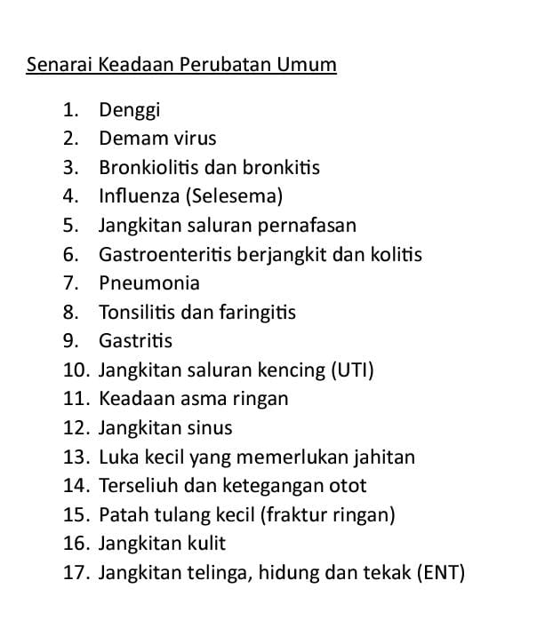
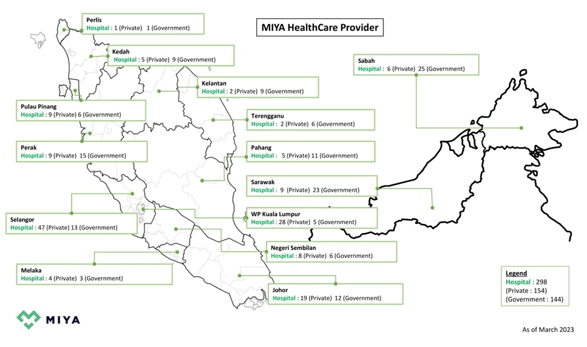
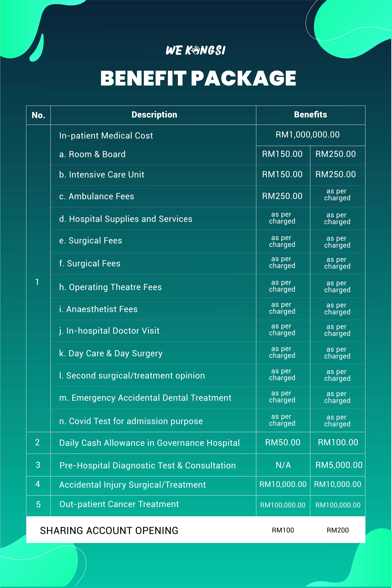
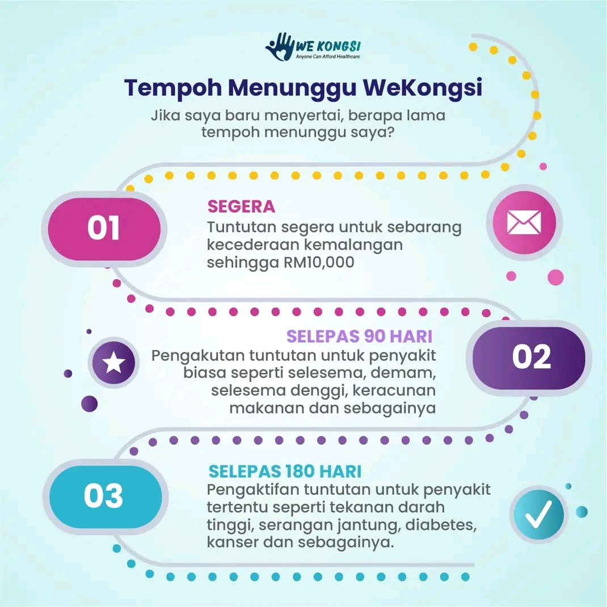

Kami Faham Anda Mungkin Ada Masalah Begini
- Belum ada medical card
- Tiada bajet yang mencukupi
- Terbeban bayar medical card sedia ada
- Dah ada medical card, tapi mahal
- Medical card yang ada dah/akan naik harga
- Nak cari medical card yang murah untuk anak-anak
- Masih survey medical card yang terbaik dengan harga berpatutan
"Malang Tidak Berbau. Sudahkah Anda Bersedia?"
Tiada siapa tahu bila musibah akan melanda. Jangan tunggu sakit dahulu baru mencari perlindungan.
"Tapi hospital kerajaan kan ada?"
Walaupun layak, pertimbangkan cabaran ini:
- Tempat letak kereta sesak
- Pesakit yang terlalu ramai
- Menunggu giliran yang lama
- Doktor pakar terhad
- Kos rawatan/alat tertentu mahal
- Sebahagian ubat perlu bayar sendiri
Memperkenalkan: WeKongsi
Saya Ahmad Naquib bin Ali, bukan ejen takaful atau insurans. Sama seperti anda, saya mencari perlindungan perubatan yang lebih baik dan mampu milik.
Dulu, medical card memerlukan RM100–RM200 sebulan atau lebih. Kini, anda boleh dapat perlindungan RM1 juta setahun dengan bayaran bawah RM50 sebulan.

Bayangkan...
Bayar bawah RM50 sebulan untuk perlindungan RM1 juta setahun. Tiada rekod kemasukan hospital? Tiada bayaran. Bila perlu masuk hospital, tunjukkan sahaja aplikasi di telefon. Sebaik GL diluluskan, semua bil ditanggung, termasuk ujian saringan.
Kini anda boleh bernafas lega. Tiada lagi beban membayar medical card yang mahal.
Kelebihan Utama Pelan Ini
- Perlindungan RM1 Juta Setahun
- Tiada Had Seumur Hidup
- Cashless (GL) di 250+ Hospital Panel
- Patuh Syariah
- Tiada Ko-takaful & Deduktibel
- Bilik & Penginapan RM150/RM250
- Rawatan Kanser RM100 Ribu Setahun
- Khairat Kematian RM10,000
Disokong Oleh Rakan Kerjasama Yang Dipercayai
Third Party Administrator
e-Mas menguruskan proses hospitalisasi dan tuntutan.

Badan Pemegang Amanah
Palladium Trustee menguruskan dana ahli secara telus.

Panel Penasihat Shariah
Afsha Shariah memastikan operasi patuh syariah.

Payment Gateway
Curlec menyediakan saluran pembayaran yang selamat.
Program WeKongsi disahkan patuh syariah oleh Afsha Shariah Advisory.

Rangkaian Hospital & Klinik Panel Seluruh Negara
Melalui eMAS, WeKongsi diterima di lebih 250 hospital panel kerajaan dan swasta seluruh Malaysia.
Tips: Hubungi hospital berhampiran dan tanya sama ada mereka menerima Surat Jaminan (GL) daripada eMAS.
TERKINI: Kini boleh digunakan untuk pesakit luar di klinik panel! Bayar RM10 sahaja untuk rawatan dan ubat bagi 17 jenis penyakit.


Macam Mana Boleh Jadi Begitu Murah?
Bayaran bulanan ialah jumlah bil hospital dibahagi dengan jumlah ahli, dengan had maksimum RM50 sebulan. Contohnya:
Situasi 1: Tuntutan Rendah
Bil Perubatan: RM30,000
Ahli: 3,000
Jumlah perkongsian setiap ahli ialah: RM30,000 ÷ 3000 =
RM10
Setiap ahli hanya ditolak RM10 daripada Sharing Account.
Situasi 2: Tiada Tuntutan
Bil Perubatan: RM0
Ahli: 3,000
Jumlah perkongsian setiap ahli ialah: RM0 ÷ 3000 =
RM0
Tiada potongan daripada Sharing Account.
Situasi 3: Tuntutan Tinggi
Bil Perubatan: RM240,000
Ahli: 3,000
Jumlah perkongsian setiap ahli ialah: RM240,000 ÷ 3000 =
RM80
Potongan dihadkan RM50 sahaja. Baki bil dibawa ke bulan hadapan.
Pilihan Yuran Keahlian & Deposit
Tips: Nak jimat, pilih Plan C. Belum ada bajet? Plan B pun ok.
Maklumat Deposit & Top-up
Deposit permulaan: RM100 (Standard) atau RM200 (Deluxe).
Bayaran bulanan (maksimum RM50) ditolak daripada deposit ini. Apabila baki mencecah had minimum, sistem akan auto-debit untuk top-up semula ke jumlah asal.

Tempoh Menunggu
- 1 Hari 1-90: Cover rawatan akibat kemalangan & kematian.
- 2 Hari 91-180: Cover semua sakit biasa & kematian.
- 3 Selepas 180 Hari: Perlindungan penuh termasuk sakit kritikal.
Syarat Kelayakan
- Warganegara Malaysia
- Sihat fizikal dan mental
- Jujur tentang status kesihatan
- Umur 15 hari hingga 45 tahun

Kelebihan & Kekurangan
Kami telus dengan anda.
Kelebihan Utama
- Simple dan mudah – semuanya di hujung jari (Proses pendaftaran sepenuhnya secara online).
- Mendapat pengesahan patuh syariah.
- Keahlian seumur hidup selagi aktif – bukan setakat umur 45 sahaja.
- Tidak perlu pay & claim – dilindungi sepenuhnya dengan GL.
- Tiada risiko tuntutan tidak diluluskan.
- Tempoh menunggu hanya 6 bulan untuk manfaat penuh (bukan 2 tahun).
- Had tuntutan sehingga RM1 juta setiap tahun.
- Khairat kematian sebanyak RM10,000.
- Diterima di lebih 300 hospital panel kerajaan dan swasta di Malaysia.
- Tiada caj co-takaful, co-payment atau deductible.
- Boleh digunakan untuk cover kos medical plan lain (co-payment, deductible).
- Sumbangan bulanan yang amat mampu milik – tidak lebih RM50.
- Tiada bayaran bulanan jika tiada tuntutan – bayar hanya bila perlu.
- Bayaran bulanan dihadkan maksimum RM50 sahaja jika ada tuntutan.
- Rawatan kanser dilindungi sehingga RM100,000 setahun.
- Kemasukan hospital mudah – hanya guna aplikasi atau kad pengenalan.
- Telus – semua ahli boleh pantau status dan dana.
- Kemaskini jumlah keahlian setiap hari.
- Laporan dana perkongsian diterbitkan setiap bulan.
- Boleh menaja keahlian dan jana pendapatan lumayan.
Perlu Dipertimbangkan
- Tak cover kos konsultasi dan rawatan sebelum warded di hospital (pre hospitalisation), kecuali pakej Deluxe.
- Tak cover kos konsultasi dan rawatan susulan selepas discaj daripada hospital (post hospitalisation).
- Hanya cover kos jika masuk wad sahaja (selepas dapat GL).
- Hanya cover rawatan dalam Malaysia.
- Tidak cover implant, dialisis, atau pemindahan organ.
- Secara asasnya perlu masuk wad 2-4 katil (bagi pakej Standard).
- Maksimum rawatan 120 hari sahaja setahun.
- Tiada pelepasan cukai.
Soalan Lazim (FAQ)
Apakah syarat kelayakan menyertai WeKongsi?
- Warganegara Malaysia.
- Berumur 14 hari hingga 45 tahun.
- Sihat daripada sebarang penyakit.
- Bersetuju dengan terma & syarat program.
Apa beza pakej Standard dan Deluxe?
Bezanya pada jumlah Sharing Account dan manfaat. Deposit Standard RM100, manakala Deluxe RM200.
Deluxe ada manfaat tambahan: bilik RM250/hari, diagnosis pra-hospital dan kos ambulans penuh. Ia juga memanjangkan tempoh sebelum perlu top-up.
Berapa lamakah tempoh menunggu?
- 0-90 hari: Tuntutan kos rawatan kemalangan (sehingga RM10,000).
- 91-180 hari: Tuntutan untuk sakit biasa (demam, denggi, etc).
- Selepas 181 hari: Tuntutan untuk penyakit kritikal (sakit jantung, kanser, etc).
Jika saya sudah ada penyakit, adakah masih layak?
Isytiharkan sebarang penyakit sedia ada semasa saringan kesihatan. Peserta berstatus 'Probation' perlu memuat naik dokumen perubatan di portal ahli untuk dinilai.
Adakah boleh guna untuk rawatan di klinik?
Ya. Kini boleh digunakan di lebih 4,000 klinik panel untuk 17 jenis sakit biasa. Senarai penyakit dan klinik ada dalam Program Guidelines.
Bagaimana untuk saya dapatkan Program Guidelines?
Muat turun Program Guidelines WeKongsi di sini.